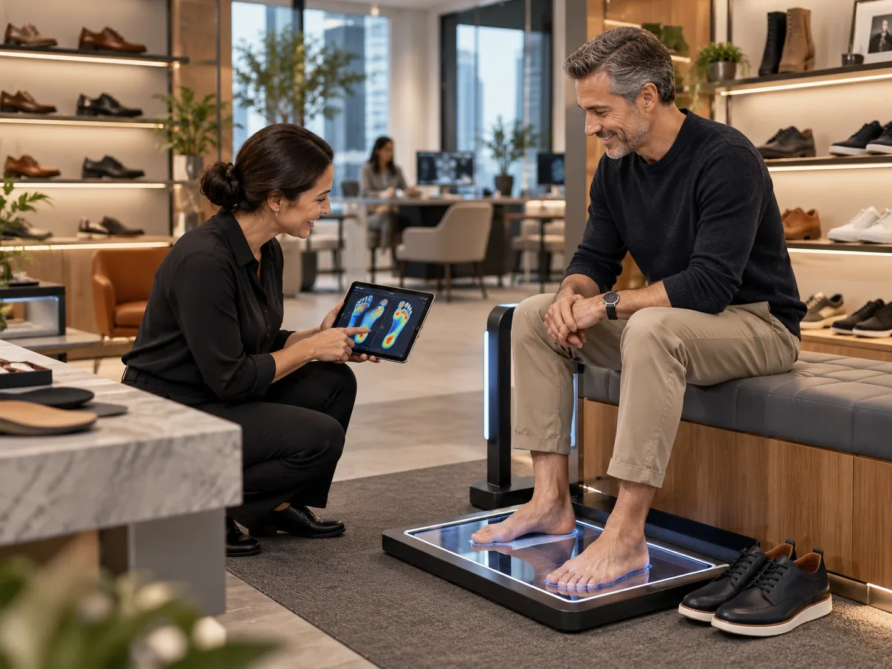
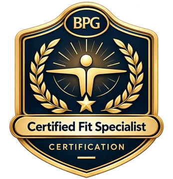

Long-shift fatigue
Ask about the real use case before recommending.
The professional fitting standard for footwear retailers, clinics and distributors. With or without a scanner.
Value at a glance
Real fit challenges first. The courses come second.
Ask about the real use case before recommending.
Length is one measure. Width, depth and volume decide comfort.
Turn scan data into plain, careful language.
The BrightPath Standard
Choose a tool to see how it works on the floor.
Programme catalogue
Every programme ends in an assessment and a badge. Foundations starts free.
Pricing
Prices in US dollars. Secure checkout by Stripe.
For organisations
Rollout, coaching and credential visibility, not a one-off training day.

Enterprise rollout
Credential integrity
Earned through knowledge, practice and professional boundaries.

BrightPath Academy · Professional credentialBuilt from real experience
Created by Akuchu Wilson, founder of BrightPath Academy and BrightPath Global.
Akuchu has trained retail and clinical teams across the Middle East, Asia, Europe, Australia and New Zealand, launched foot-scanning kiosks and supported store openings.
“We are here to help you find what meets your needs, not to sell you what you don’t need.”
“He demonstrated a strong ability to engage frontline teams and translate technical fit and footwear concepts into clear, practical guidance that teams could apply on the shop floor.”
“Mr. Wilson exemplifies dedication and belief in the potential of others, consistently driving teams towards success.”
“His passion for the brand and its principles was truly contagious.”
“Great leadership skills.”
Store launches, team training, customer fittings and events.
Insights and events
Short reads and live sessions.
FAQ
Learners, managers, payments and certificates.
Enterprise launch
Tell us about your stores or clinics. We reply within one business day.